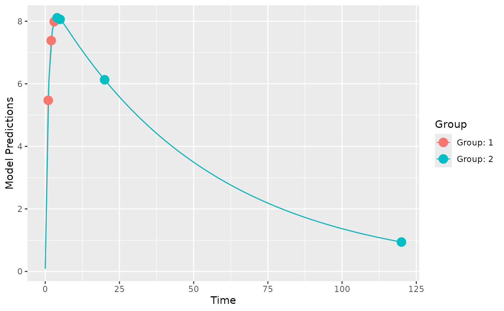

Optimize the number of subjects based on desired uncertainty of a parameter.
Source:R/optimize_n.R
optimize_n_rse.RdOptimize the number of subjects, based on the current design and the desired uncertainty of a single parameter
Arguments
- poped.db
A PopED database.
- bpop_idx
The index number of the parameter, currently only bpop parameters are allowed.
- need_rse
The relative standard error (RSE) one would like to achieve (in percent, by default).
- use_percent
Should the RSE be represented as a percentage (T/F)?
- allowed_values
A vector of the allowed total number of subjects in the study.
Examples
# 2 design groups with either early or late samples
poped.db <- create.poped.database(ff_fun=ff.PK.1.comp.oral.sd.CL,
fg_fun=function(x,a,bpop,b,bocc){
parameters=c(CL=bpop[1]*exp(b[1]),
V=bpop[2]*exp(b[2]),
KA=bpop[3]*exp(b[3]),
Favail=bpop[4],
DOSE=a[1])
return(parameters)
},
fError_fun=feps.add.prop,
bpop=c(CL=0.15, V=8, KA=1.0, Favail=1),
notfixed_bpop=c(1,1,1,0),
d=c(CL=0.07, V=0.02, KA=0.6),
sigma=c(0.01,0.25),
xt=list(c(1,2,3),c(4,5,20,120)),
groupsize=50,
minxt=0.01,
maxxt=120,
a=70,
mina=0.01,
maxa=100)
# plot of the design
plot_model_prediction(poped.db)

# the current RSE values
evaluate_design(poped.db)$rse
#> CL V KA d_CL d_V d_KA SIGMA[1,1]
#> 4.742175 1.908239 11.706099 38.149149 23.388391 23.297863 28.859652
#> SIGMA[2,2]
#> 48.150485
# number of individuals if CL should have 10% RSE
optimize_n_rse(poped.db,
bpop_idx=1, # for CL
need_rse=10) # the RSE you want
#> $n
#> [1] 24
#>
#> $par_rse
#> CL
#> 9.679923
#>